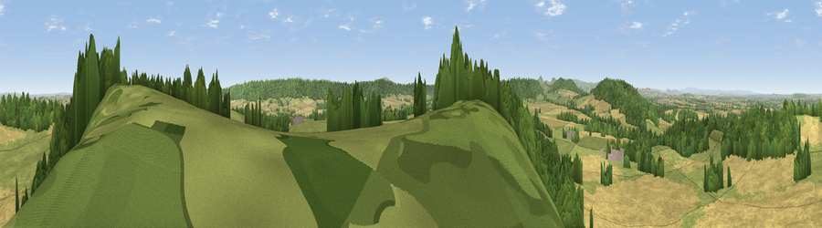

Viewpoint near Coundmoor
#4659 in England · top 15% of its area beats it · near CoundmoorWhere it is
The exact computed spot (SJ 56475 01075). Click the marker for map links.
The view, rendered

A 360° render of this exact spot computed from the terrain model, tree cover and land cover — summer colours, afternoon light, calibrated against photographs of famous viewpoints. Real trees, hedges and buildings will differ in detail.
The panorama
Grey silhouette: terrain skyline in each direction (720 bearings, Earth curvature and refraction included). Dashed green: skyline with trees (+15 m) and buildings (+8 m) as obstacles. Blue strip: how far the ground is visible on each bearing.
Where the view opens
Wedge length = distance to the farthest visible ground on that bearing (vegetation-aware). Rings at 10, 25 and 50 km.
What fills the view
48% cropland · 28% grassland · 23% woodland
Angular shares of the visible panorama (visual magnitude), not map area. Landscape diversity 0.47 (0–1 Shannon).
Key numbers
More beautiful places nearby
The staircase of upgrades: each row has a higher view potential than everything closer. Driving times are estimates from straight-line distance, calibrated against real road routing — check an actual route before setting out.
| Place | Direction | Drive | Score |
|---|---|---|---|
| Viewpoint near Coundmoor | NE · 0 km | ~1 min | 76.3 |
| Viewpoint near Harley | ESE · 4 km | ~9 min | 76.8 |
| Viewpoint near Harley | ESE · 4 km | ~9 min | 79.9 |
| Viewpoint near Leebotwood | WSW · 8 km | ~15 min | 80.7 |
| The Lawley | WSW · 8 km | ~16 min | 85.8 |
| Viewpoint near Little Wenlock | NE · 9 km | ~18 min | 86.6 |
| North Hill | SSE · 58 km | ~81 min | 86.8 |
| Worcestershire Beacon | SSE · 59 km | ~82 min | 87.1 |
52.60570, -2.64414 · source: screening · position refined by local search. Computed location — check access rights before visiting.